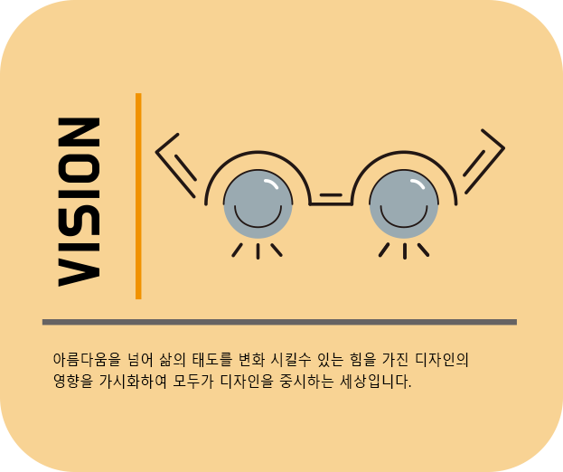
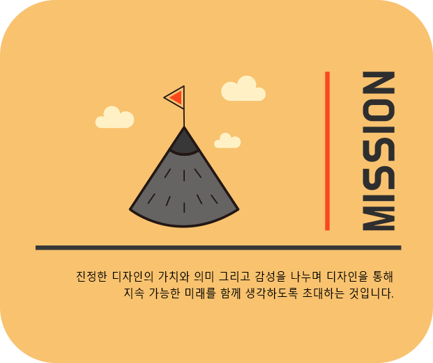
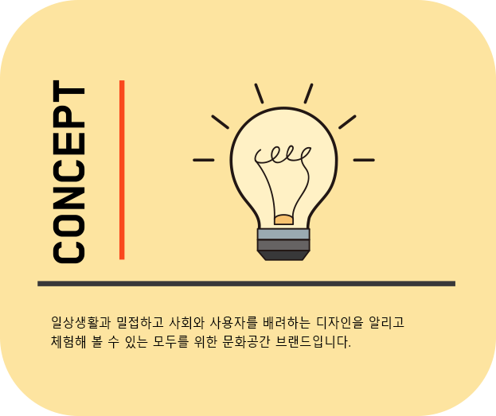
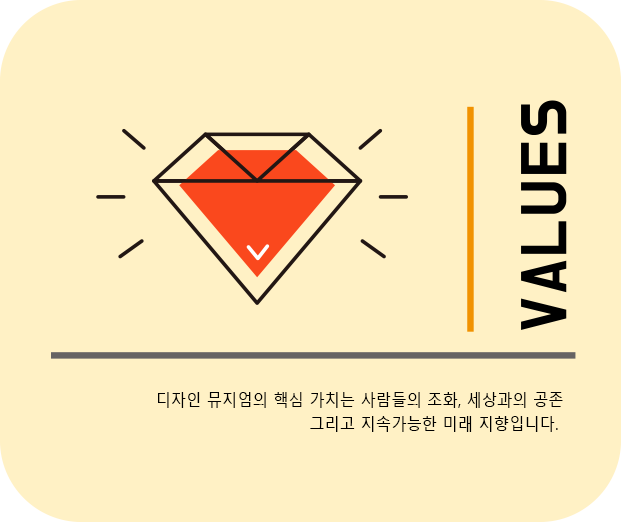

- 
- 
- 
- 
BRAND STORY
부산 디자인 뮤지엄은 오직 디자인에 초점을 맞춘 디자인 뮤지엄으로 지역의
디자인 문화 활성화와 발전을 도모하기 위한 문화 공간 브랜드 입니
다.
사회와 사용자를 배려하는 디자인 사례들을 통해 사회적 문제에 대한 관심을
높이고 더 나아가 지속 가능한 미래를 만들어 모두가 공존할 수
있는 사회를 만들고자 합니다.